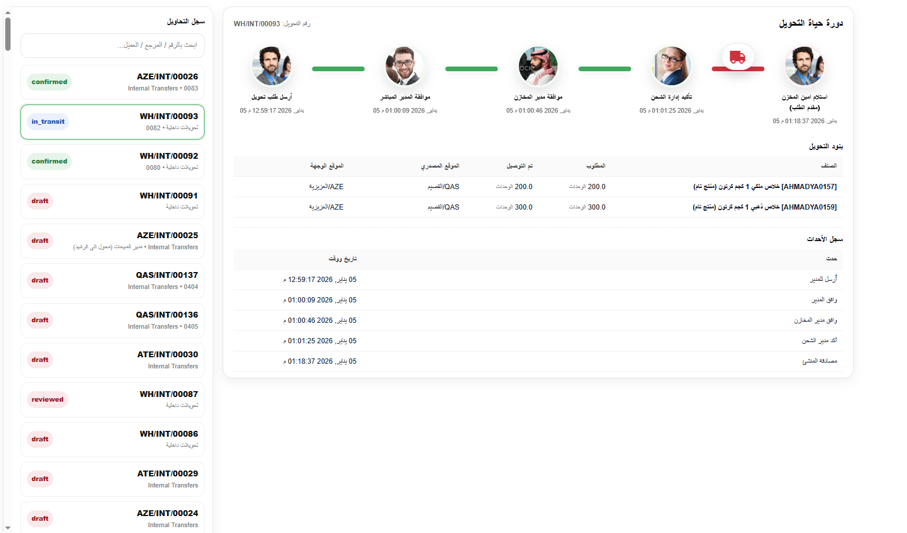
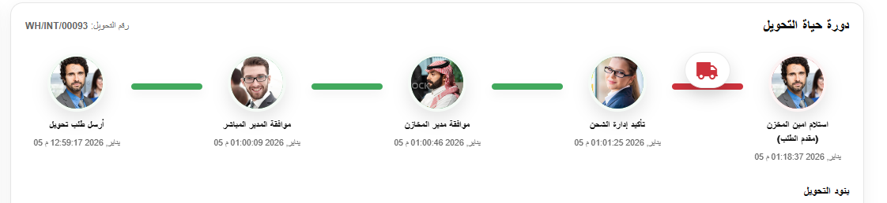
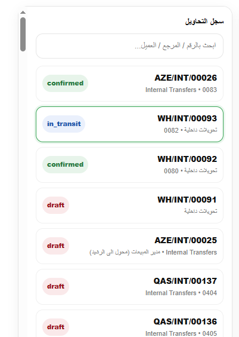

مديول احترافي لإدارة وتتبع التحويلات الداخلية والشحنات بين المواقع والمخازن، مع تحديد المسؤول في كل مرحلة وعرض خط زمني واضح يوثّق جميع الإجراءات.
تتبع كامل حوكمة سجل أحداث صلاحيات

A professional workflow module to track internal transfers and shipments with clear approvals, responsibilities, and a visual timeline.
Full Tracking Governance Audit Trail Permissions